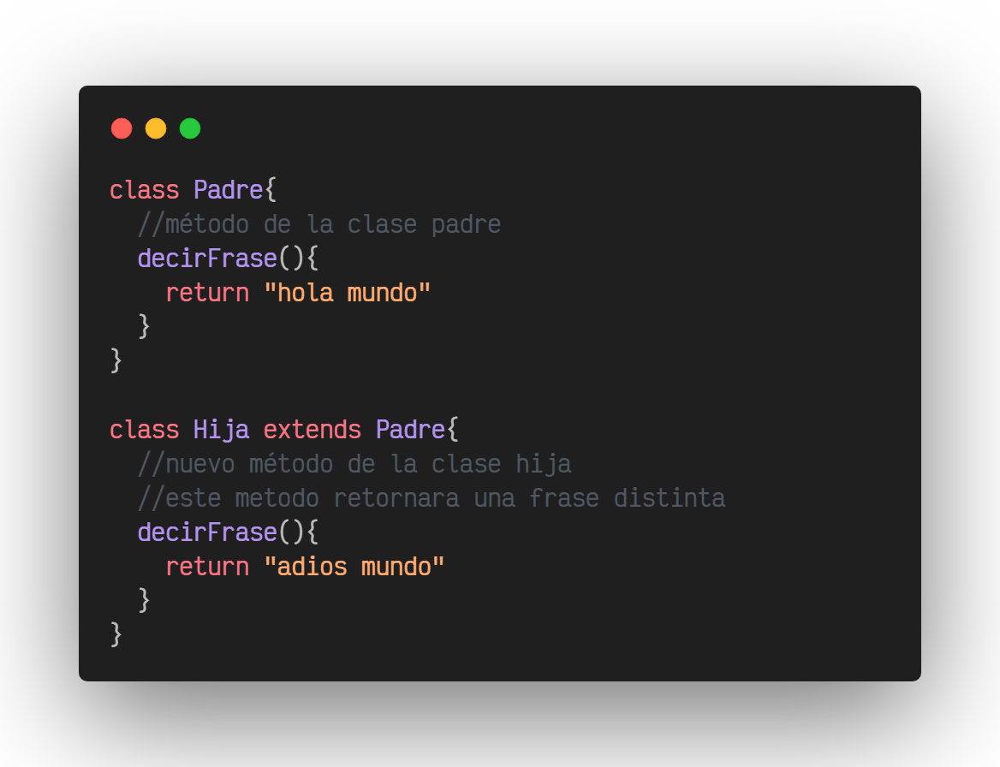

El polimorfismo
El polimorfismo consiste en tener un método en una clase padre y poder reescribir el método en la clase hija. Esto quiere decir que se tendrá el mismo método en ambas clases, pero la clase hija operará diferentes acciones.
